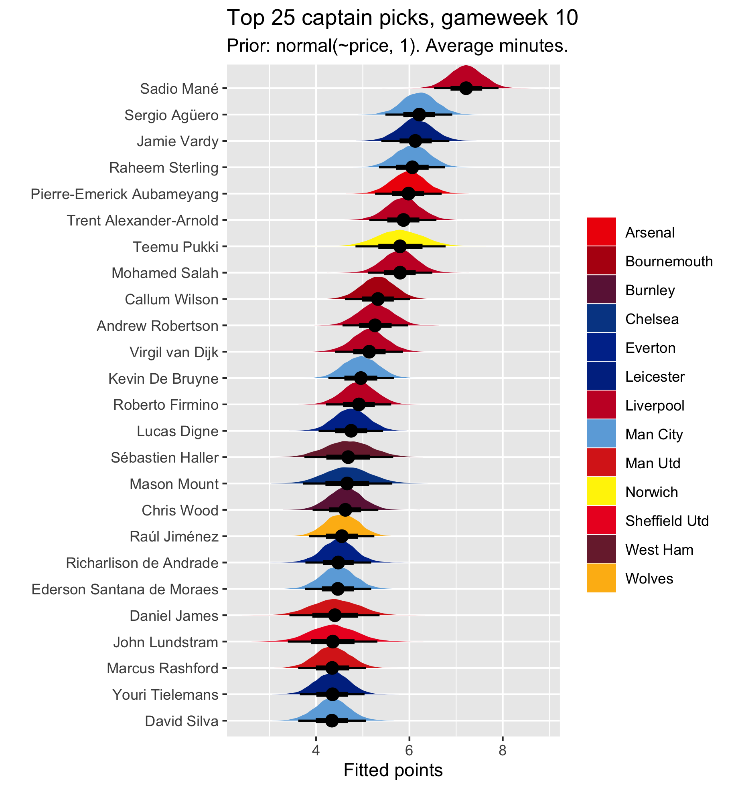
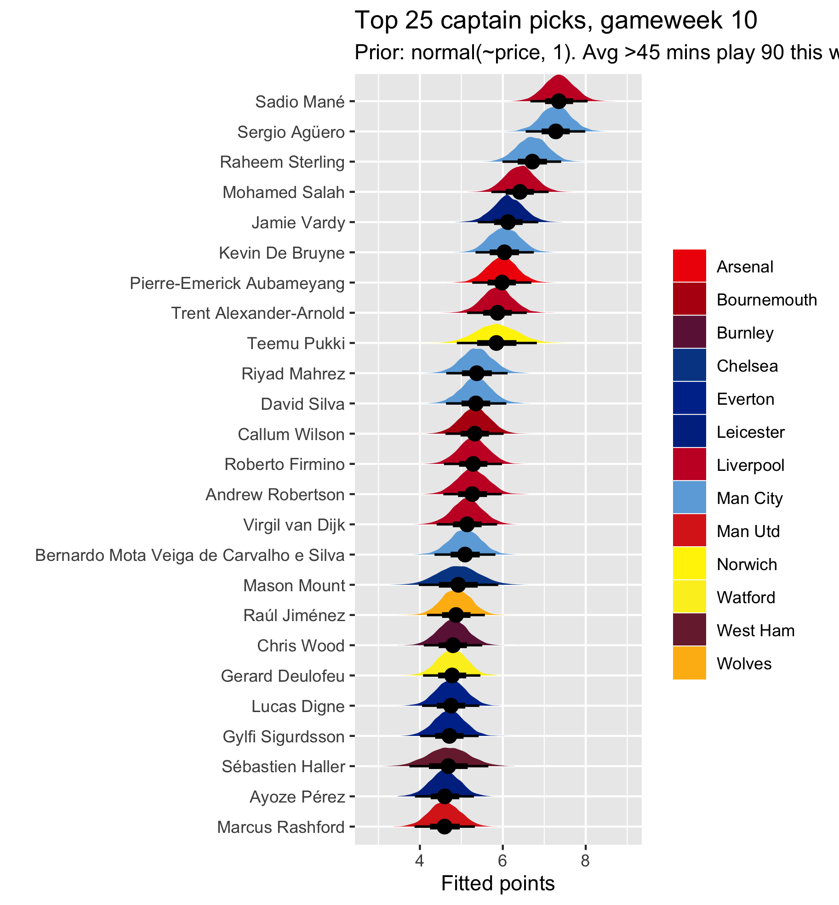

Another gameweek, another captaincy choice. If you, like most players (I think) pick your captain as a function of these key heuristics
then this choice can sometimes be difficult some weeks. I think, this week, most people will captain a City asset. A City premium (Sterling/Agüero/etc) at home against Aston Villa, a promoted side, seems like a no-brainer. If it does seem like a no-brainer to you, then go for it. But, if you don’t think it’s that clear cut, and wish you could have some more fine-grained, quantitative way to assess your players based on Class, Form, Fixture, Team and Minutes, then you’ve come to the right place. Well, no, at the very least you’ve come to a place where someone is trying to provide that. My approach has its flaws. It’s expained more fully here and here.
Each week I run a Bayesian multilevel model, using data from vastaav’s repo going back to gameweek 25 last season and up to the most recent gameweek, to model the effect of Class (captured by a prior based on price, and historical performance of players incorporated by including some of last season’s data), Form (captured by a recency/gameweek weighting which upweights more recent performance), Fixture (captured by an opponent variable and a home/away variable), Team (captured by specifying players are nested within teams — the multilevel component) and Minutes (captured by a simple numerical measure of minutes). To predict the best captains for the upcoming gameweek, I then fit the model to new data, containing each player, their upcoming opponent, etc, and get a fitted points prediction. However, my aim is not to predict points, but to model normally qualitative/heuristic captain selection methods quantitatively.
Despite this, every week on Reddit I get requests for an expected/actual points comparison for each player. I don’t really want to do this, and besides, I present distributions of probable scores rather than point estimates anyway. What I’ll do, though, is a simple table of last week’s predicted top picks, how many points they ended up getting, and the actual highest point scorers. Then, week-on-week, it will become clear how often/infrequently the top picks according to the ‘captain-picking logic’ are actually among the top point scorers. Remember, though, that more often than not the top scorers will feature players you would never dream of picking as your captain so this comparison is a bit weird. Also, I’m doing this for the version where players who have played >45 minutes average over the last 5 games are assumed to play 90 this week (see below).
| Top 10 in model | Points | Top 10 in reality | Points |
|---|---|---|---|
| Agüero | 0 | Alonso | 14 |
| Mané | 2 | Grealish | 13 |
| Salah | 0 | Janmaat | 12 |
| Sterling | 5 | Barnes (H) | 11 |
| Kane | 2 | Silva (D) | 11 |
| Aubameyang | 2 | O’Connell | 11 |
| Vardy | 8 | Targett | 10 |
| De Bruyne | 3 | Bernard | 10 |
| Wilson (C) | 2 | Cook (S) | 9 |
| Son | 1 | Hudson-Odoi | 9 |
As you can see, this was a particularly dodgy gameweek for seemingly ‘sensible’ captain picks. Very few people will have considered captaining any of the actual top ten. Only Sterling (4th) and Vardy (7th) got meaningful returns, and neither of these got them into the top ten overall. Bear in mind, of course, that neither Agüero nor Salah played. I couldn’t factor this in beforehand. If the model knew they were going to get 0 minutes, they would have been absolutely nowhere near the top ten. Here’s to hoping this week captains are more predictable.
On the point about specifying 0 minutes, it’s worth noting that Tammy Abraham should probably be in both top 25s below. The reason he is not there is because the model doesn’t yet completely recognise that 0 minutes always means 0 points. The data I use has Tammy Abraham listed as a Chelsea player last season, but he never played, so never got any points. It knows this is mostly because he didn’t play, but still assigns some of the reason for his 0 minutes to him as a player. Even with this limitation, he very nearly makes the top 25 thanks to his performance this season. His fitted points ar around 3.5-4.5, putting him not too far off Rashford. I should have removed his data from last season by now, but I’m an idiot so I forgot to do this before running the model, which takes several hours, so I don’t have time to do it again before posting this week. I think, with only this season’s data, Tammy would look similar to Pukki, maybe slightly higher.
A final thing about minutes is to remind you that I report two versions of the output. In one, every player is assumed to play the same amount of minutes this week as their average minutes over the last five gameweeks. In the other, every player with an average number of minutes over the last five greater than 45 (a half) is assumed to play 90 minutes (a whole game) this week. I’m open to suggestions on a better way to incorporate minutes into the output, but to me this seems fairly decent. I just can’t really factor in Pep’s wheel and other random variance in minutes.
Worth noting also that this week I have finally widened the prior slightly. This prior is now a function of player price, to capture that we prefer to captain premiums (high-class players) but the standard deviation on it is now 1 instead of 0.5. This means it listens more to the data, so that everything can drift away from the prior more easily. Players like Pépé, priced around 9.5, seem to have now dropped down, because the model isn’t paying as much attention to their price and more to their actual performance.
The results are below. Note that the model, based on the data it has, thinks that Spurs are an easier opponent to get points against currently than Villa (lol), so Mané is preferred over City assets. You have more data than the model though, and you know that Villa are a promoted side whereas Spurs are usually top 6, so you might disagree with it preferring Mané over Agüero. That’s fine. Disagree. Note also that all the differences between the usual top four are lessened when we assume that Agüero and Salah not starting was an anomaly (in the second output where we assume they’ll get 90 this week). Mané looks so much better than the others in the first output because he just keeps getting a lot of minutes. Salah comes right up into the top few from a much lower position, for example. Regardless of this, Salah is still generally outshone by Mané for the time being. Other than all that, these results are pretty typical and uncontroversial. Vardy has climbed up a bit, becoming an increasingly regular feature of the top five after another return last week. Remember, again, Tammy would probably be in the top 10 were it not for the inclusion of his last season data. He seems like a decent pick.

